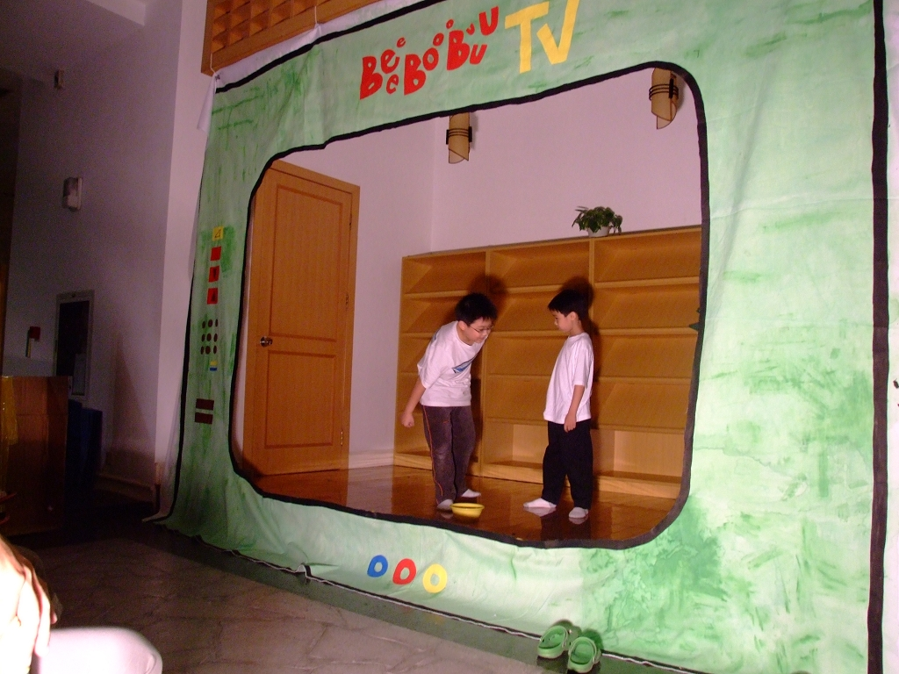

BeeeBoooBuuu – Theaterworkshop für Kinder
>> Workshopdetails
>> Galerie früherer Workshops
>> Häufig gestellte Fragen
BeeeBoooBuuu wurde im Oktober 2008 von Sanja Cekov und Henning Otte gegründet, mit dem Ziel eine multikulturelle Kreativitätsplattform für Kinder hervorzubringen. Bis 2011 wurde der Workshop innerhalb von Expat-Gemeinschaften von Suzhou und Shanghai durchgeführt. Kinder aus China, Taiwan, Malaysia, Deutschland, Chile, USA, Brasilien, Korea und Norwegen entdeckten im gemeinsamen Schaffen die magische Welt des Theaters.
Im Jahr 2012 zog BeeeBoooBuuu nach Berlin um, unter der Leitung von Sanja Cekov.
Über unseren Workshop:
 BeeeBoooBuuu ist eine Serie von disziplinübergreifenden Theaterworkshops für Kinder. Unsere Workshops geben Kindern eine Möglichkeit, nicht nur die darstellenden Künste zu erforschen, sondern auch ihre Kommunikationsfähigkeit und Selbstachtung zu verbessern und Vorstellungskraft und Kreativität zu entwickeln.
BeeeBoooBuuu ist eine Serie von disziplinübergreifenden Theaterworkshops für Kinder. Unsere Workshops geben Kindern eine Möglichkeit, nicht nur die darstellenden Künste zu erforschen, sondern auch ihre Kommunikationsfähigkeit und Selbstachtung zu verbessern und Vorstellungskraft und Kreativität zu entwickeln.
Kinder mögen es, die Welt um sie herum zu erkunden, und haben ein natürliches Bedürfnis, in verschiedene Rollen zu schlüpfen, in denen sie die Dinge und Leute die ihnen begegnen imitieren. Die freie Verwendung des Einfallsreichtums ist der Schlüssel für Spaß und Erfolg auf der Bühne (und im Alltagsleben). Deshalb zielt unser Workshop auf die Förderung der Kreativität der Kinder. Durch verschiedene szenische Techniken (Puppenspiel, Schattentheater, Tanz…), Spiele (Improvisation, Kreatives Denken…) und Übungen (Aufwärmen, Konzentration, Teamentwicklung…) lernen die Kinder, ihre Phantasie und Kreativität zu öffnen, auszurichten und als Theaterstück, Geschichte, Tanz, Kostüm in eine kreative Form zu bringen. Sie werden ermuntert, mit Stimme, Bewegung, Schminke, Text usw. zu experimentieren, um ihren Weg des Ausdrucks zu finden.
Der Theaterworkshop hilft Kindern, durch die Beherrschung dieses schöpferischen Prozesses Selbstvertrauen und Teamgeist aufzubauen. In der entspannten und spielerischen Atmosphäre erfahren die Kinder das zum gemeinsamen Schaffen nicht nur gehört, eigene Ideen vorzustellen und einzubringen, sondern auch die anderen Teilnehmern zu respektieren, ihnen zuzuhören und gegenseitiges Vertrauen aufzubauen. Zum Abschluss der kreativen Arbeit, zu der alle gleichermaßen einen Beitrag geleistet haben, festigt der Auftritt vor Publikum die Identifikation mit dem gemeinsamen Erfolg.
Einige der wichtigsten Methoden und Übungen, die in unserem Workshop benutzt werden, sind:
- PUPPEN:
- Die Kinder basteln eigene Puppen oder verwenden vorhandene Puppen und beleben Hände, Finger, Füße und verschieden Objekte um eine Geschichte aufzuführen.
- KREATIVE BEWEGUNG:
- Die Kinder lernen, das Worte nicht der einzige Weg sind, etwas auf der Bühne zu sagen, und entdecken sich durch Bewegung auszudrücken.
- TANZ:
- Die Kinder begegnen in kurzen Choreographien verschiedenen Tanzformen, um diese in Geschichten, Dialogen und Szenen aufzunehmen.
- KREATIVE DARSTELLUNG:
- Kinder lernen aus Geschichten, Liedern, Bildern, Objekten usw. kleine Theaterstücke zu entwickeln.
- IMPROVISATION:
- Bei Improvisationsspielen und -übungen kreieren die Kinder originelle Szenen.
- TECHNISCHE WORKSHOPS:
- Kinder lernen Masken, Schminke, Kostümen und ein Bühnenbild zu bauen.
- STIMMÜBUNGEN:
- Kinder lernen die Stimme frei zu verwenden um Szenen und Charakter aufzubauen.
Workshopdetails:
- Teilnehmerzahl: min. 5, max. 12 Kinder
- Alter: 6-10, 11-14, 15-19
- Mögliche Sprachen: Deutsch, Englisch, Serbo-kroatisch
Jeder Workshopzyklus endet mit einer Abschlusspräsentation oder -aufführung für Eltern, Freunde, Gäste.
Bitte bringt bequeme Kleidung mit.
Für weitere Informationen schicken Sie eine E-mail an: sparkssticksstrings@gmail.com oder rufen Sie an unter 01525 211 3463
Galerie früherer Workshops:





Häufig gestellte Fragen:
- 1. Was bedeutet BeeeBoooBuuu?
Wir wollten, dass der Name unseres Workshops kein Wort mit fester Bedeutung ist, sondern ein Klang. Deswegen kann BeeeBoooBuuu bedeuten, was du möchtest, und du kannst es ausprechen, wie du es willst.
- 2. Wie lange brauchen die Kinder, sich an den Workshop zu gewöhnen?
Wir beginnen unseren Workshop mit einigen Kennenlernenspielen, nach denen die Kinder normalerweise schon ‚mitten drin‘ sind und sich schnell eingewöhnen.
- 3. Dürfen die Eltern zuschauen?
So lange als es die Kinder nicht stört, sind wir einverstanden damit, dass Eltern gelegentlich zuschauen. Allerdings, empfehlen wir den Eltern schüchterner Kinder, gerade am Anfang nicht dabei zu sein, um ihren Kindern genug Raum zu geben, auf andere Kinder zuzugehen. Spezielle Eltern-Kinder-Workshops sind derzeit in der Planung.
- 4. Was zeichnet BBB aus?
Wir glauben, dass aufwändige Kostüme und auswendig gelernte Theaterstücke nicht der richtige Weg sind, um die Magie des Theaters zu erfahren. Wir halten viel von der Vorstellungskraft, die aus weniger mehr macht. Kostüme und Bühnenbilder werden von den Kindern mit unserer Hilfe selbst erstellt. Das gleiche gilt für die Texte, welche wir im Workshop und in der Abschlusspräsentation verwenden. Wir können manche bekannte Märchen oder Lieder benutzen, aber wir machen daraus unsere eigenen Plots, Charaktere und Dialoge.
Zusammen öffnen wir die Schatzkammer des Theaters zusammen mit den Kindern, wir wecken in ihnen die Lust am Spiel mit den gefunden Schätzen und wir zeigen ihnen dabei, wie sie diese in andere Sphären des Lebens bringen können.
- 5. Ist BeeeBoooBuuu an Kooperationen mit anderen Institutionen interessiert?
BeeeBoooBuuu Workshop hatte schon eine erfolgreiche Kooperation mit der Deutsche Schule Shanghai und wir freuen uns aud gemeinsame Projekte mit weiteren Personen, Gruppen und Institutionen, die sich mit Theater, Kreativität, Ausbildung, Kindern und Jugendlichen beschäftigen.
- 6. Warum haben Sie keine Workshops für Kinder im Alter unter 6 Jahren? ?
Manchmal sagen wir, dass die ganz kleinen Kinder wie Schwämmchen sind, weil sie alles aufsaugen, was sie umgibt. Erst später wächst der Antrieb, die Dinge selbst zu gestalten und zu präsentieren. Der Zweck unseres Workshop ist es, Kindern beizubringen, wie sie mit ihrer Kreativität und Ideen etwas formen können, das auf der Bühne gezeigt werden kann. Wir finden, dass Kinder unter 6 Jahren noch nicht unabhängig genug sind, um zu diesem Ziel zu gelangen.
- 7. Welche Sprachen werden im Workshop benützt?
Bisher haben wir Workshops mit Kindern aus vielen verschiedenen Ländern in den Arbeitssprachen Englisch und Deutsch durchgeführt. Wir freuen uns über kulturelle und sprachliche Vielfalt im Workshop und spielen auch damit. Wenn wir Kinder aus gleichem Sprachhintergrund haben, können wir Workshops auch in den Sprachen Deutsch, Chinesisch und Serbo-kroatisch anbieten.
- 8. Wie lange dauert ein Workshop?
Ein Workshopablauf besteht normalerweise aus sieben Einheiten plus einer Abschlusspräsentation, aber die Anzahl kann variieren. Eine Einheit dauert 90 Minuten, kann aber bei der Vorbereitung der Abschlussaufführung auch etwas mehr Zeit benötigen. Nach Ablauf eines Workshopzyklus beginnen wir mit den neu hinzugekommenen Kindern von vorne, aber mit anderen Themen und Techniken, so dass auch eine kontinuierliche Teilnahme möglich ist.
- 9. Warum ist die Nummer der Teilnehmer begrenzt auf 12?
Wir glauben, dass Theater mehr als Nachahmung ist und wir möchten nicht, dass die Kinder uns kopieren, sondern dass sie mit eignen Ideen, Bewegungen, Geschichten und kommen. Daher ist die Arbeit in kleinen Gruppen und Paaren sehr wichtig, und damit wir auf alle Gruppen gleichzeitig eingehen können darf die Teilnehmerzahl nicht zu groß sein . Wir möchten keinen oder keine gute Ideen zurückstellen, weil wir nicht genug Zeit oder Raum haben.
Wenn wir einen Workshop mit Jugendlichen durchführen, ist es möglich mehr als 12 Teilnehmer zu haben, weil ihre Aufmerksamheitspanne größer ist und sie unabhängiger zusammenarbeiten und sich gegenseitig Feedback geben können.
Ein besonderer Dank gilt Joy Hong. Ohne Ihre Unterstützung könnten wir nicht auf unseren Füße stehen!